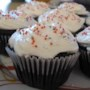

Fresh Southern Peach Cobbler
Recipe by aeposey
"I've been experimenting with cobbler for some time and this recipe is the final result. Loved by all."
Ingredients
- 8 fresh peaches
- 1/4 cup white sugar
- 1/4 brown sugar
- 1/4 teaspoon ground cinnamon
- 1/8 teaspoon ground nutmeg
- 1 teaspoon fresh lemon juice
- 2 teaspoons cornstarch
- 1 cup all-purpose flour
- 1/4 cup white sugar
- 1/4 cup brown sugar
- 1 teaspoon baking powder
- 1/2 teaspoon salt
- 6 tablespoons unsalted butter
- 1/4 cup boiling water
Directions
- Preheat oven to 425 degrees F
- In a large bowl, combine peaches, 1/4 cup white sugar, 1/4 cup brown sugar, 1/4 teaspoon cinnamon, nutmeg, lemon juice, and cornstarch. Toss to coat evenly, and pour into a 2 quart baking dish. Bake in preheated oven for 10 minutes.
- Meanwhile, in a large bowl, combine flour, 1/4 cup white sugar, 1/4 cup brown sugar, baking powder, and salt. Blend in butter with your fingertips, or a pastry blender, until mixture resembles coarse meal. Stir in water until just combined.
- Remove peaches from oven, and drop spoonfuls of topping over them. Sprinkle entire cobbler with the sugar and cinnamon mixture. Bake until topping is golden, about 30 minutes.
Reviews (3)
PIXIE_BIT
This is a good peach cobbler - just the right spices and sweetness. You should note however the amount of baking powder - this is a very "cake-like" cobbler.

southerncook
This is an okay recipe. To me though, it's not a peach cobbler, it's peaches and biscuits. I live in the south and I don't know why this would be called southern peach cobbler.
 i-like-food
i-like-food
Share